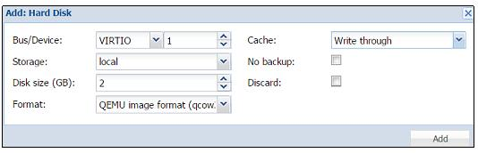

Глава 3. Управление кластером и виртуальными машинами
В данной главе мы охватим следующие разделы:
-
Создание кластера Proxmox
-
Добавление узлов в кластер
-
Удаление узлов из кластера
-
Повторное подключение удаленных узлов в кластер
-
Понимание файловой системы Proxmox
-
Управление ISO и шаблонами OpenVZ
-
Создание виртуальной машины на базе KVM
-
Создание контейнера OpenVZ
-
Миграцию виртуальных машин
-
Клонирование виртуальных машин
-
Управление образами виртуальных дисков
-
Управление контейнерами OpenVZ
-
Понимание OpenVZ счетчиков пользовательских компонентов
Содержание
- 3. Управление кластером и виртуальными машинами
- Введение
- Создание кластера Proxmox
- Добавление узлов в кластер
- Удаление узлов из кластера
- Повторное подключение удаленных узлов в кластер
- Понимание файловой системы Proxmox
- Управление ISO и шаблонами OpenVZ
- Создание виртуальной машины на базе KVM
- Создание контейнера OpenVZ
- Миграция виртуальных машин
- Клонирование виртуальных машин
- Управление образами виртуальных дисков
- Управление контейнерами OpenVZ
- Понимание OpenVZ счетчиков пользовательских компонентов
Кластер является суммой множества узлов компьютеров соединенных вместе посредством сетевой среды. Одним из основных преимуществ кластеризации является перемещение виртуальных машин на различные узлы по мере необходимости, обеспечивая максимальное время работы без отказов. Кластер делает возможным централизованное управление всеми узлами участниками и виртуальными машинами в пределах этих узлов. Хотя узлы в кластере работаю совместно, они не обеспечивают высокой доступности после сразу начальной установки. Для того чтобы получить полностью автоматизированную высокую доступность, нам придется вначале выполнить настройку. Подробнее о настройке высокой доступности можно ознакомиться в Главе 4. Настройка сети. Кластеры Promox используют ряд определенных портов для различных функций. Важно обеспечить доступность этих портов и отсутствие их блокировки межсетевыми экранами. Данная таблица показывает используемые порты и их функции:
| Порт | Функция |
|---|---|
TCP |
Proxmox WebGUI |
TCP |
Доступ к консоли VNC |
TCP |
Доступ к консоли SPICE |
TCP |
SSH доступ |
UDP |
Широковещательный CMAN для применения настроек кластера |
Следующий рисунок показывает базовую схему кластера Proxmox с тремя узлами Proxmox:
В предыдущей схеме сети присутствуют все три узла Proxmox. Межсетевые экраны, совместно используемые хранилища на основе
NFS и компьютер для административных целей соединены физическим коммутатором.
Узел Proxmox 1 содержит одну виртуальную машину KVM и один контейнер VZ. Каждая виртуальная машина соединяется с узлом
мостом с именем vmbr0. Каждый из этих мостов соединяется с физическим сетевым интерфейсом
каждого узла Proxmox. Конечно, это черезчур упрощенная схема того, какмим образом различные компоненты включаются в кластер.
Большинство сетевых компонентов может быть найдено в Главе 4. Настройка сети. В данной главе мы собираемся изучить базовые настройки кластера и управление виртуальными машинами в кластере Proxmox VE.
Кластер не создается автоматически на только что установленном узле Proxmox. Он должен быть создан через интерфейс командной строки с любого из узлов Proxmox, который собирается стать частью нашего кластера. После того как кластер создан и узлы добавлены в этот кластер, большая часть управления может выполняться через графический интерфейс.
Приготовление
Зарегистрируйтесь на узле Proxmox в качестве root через SSH или опцию Shell
графического интерфейса Proxmox как показано на следующем экранном снимке:
Как это сделать...
-
Чтобы создать новый кластер, воспользуйтесь следующим форматом команды:
# pvecm create <cluster_name>
Например, в окружении Proxmox мы собираемся создать кластер с именем
pmx:# pvecm create <cluster_name>
-
После выполнения команды создания кластера убедитесь в том, что он создан воспользовавшись следующей командой:
#pvecm status
Команда должна отобразить информацию подобную следующему коду:
Version: 6.2.0 Config Version: 1 Cluster Name: pmx Cluster Id: 786 Cluster Member: Yes Cluster Generation: 51 Membership state: Cluster-Member Nodes: 1 Expected votes: 3 Total votes: 3 Node votes: 1 Quorum: 1 Active subsystems: 5 Flags: Ports Bound: 0 Node name: pmx1 Node ID: 1 Multicast addresses: 239.192.3.21 Node addresses: 172.16.0.71
Как это работает...
Команда создания кластера создает файл настройки в пути каталога /etc/pve/cluster.conf.
Содержимое файла настройки должно выглядеть примерно аналогично следующему экранному снимку:
По мере добавления узлов в кластер файл настройки будет автоматически пополняться информацией об узлах. Важно отметить синтаксис,
который является config_version. Если вы правите этот файл настройки вручную, убедитесь в
инкрементальном изменении номера версии. Когда настройка кластера выполняется через интерфейс командной строки, такая нумерация версий
выполняется автоматически.
![[Совет]](../common/images/admon/tip.png) | Совет |
|---|---|
|
В большинстве случаев нет необходимости подправлять настройку. Это может быть необходимо в крайне редких случаях, например, при восстановлении файла настройки из резервной копии для восстановления разрушенного кластера. |
Есть кое-что еще...
Когда мы добавим некоторые узлы в кластер, мы посмотрим вновь конфигурацию кластера чтобы увидеть изменения. Мы также проведем сравнения после внесения изменений в файл конфигурации при настройке высокой доступности Proxmox.
Смотрите также...
-
Мы рассмотрим высокую доступность Proxmox в Главе 4. Настройка сети.
После кластер будет создан, мы должны добавить дополнительные узлы, чтобы выполнить предназначение кластера. Кластер Proxmox
требует минимум три узла для правильного создания кластера. С тремя узлами возможен quorum,
который позволяет кластерам обеспечивать работоспособность и функционирование должным образом. Кроме того, можно создать кластер
только с двумя узлами, но это не рекомендуется. При наличии только двух узлов большинство голосов невозможно для выборов кластера.
Кластер с двумя узлами может быть вариантом для целей обучения или для очень небольшой виртуальной среды.
Приготовление
Задача добавления узлов также требует выполнения в среде командной строки. В версии Proxmox VE 3.4 нет возможности добавлять
узлы через графический интерфейс Proxmox. Будьте уверены, что время и дата синхронизированы между узлами. Процесс создания кластера
применяет криптографический метод и для этого очень важно
чтобы все узлы имели бы одинаковое время и дату.
Как это сделать...
Используйте следующие шаги для добавления узлов в кластер:
-
Зарегистрируйтесь на узле для добавления в качестве root через SSH или графический интерфейс Proxmox |
Shell. -
На добавляемом узле выполните следующую команду:
#pvecm add <existing_node_in_cluster>
![[Замечание]](../common/images/admon/note.png)
Замечание Существующие узлы могут быть любыми уже добавленным в кластер узлом или самым первым узлом на котором был создан кластер если не существует никаких других дополнительных узлов. В кластере Proxmox не существует иерархии ведущего или ведомого. Все узлы участвую в кластере на равных условиях.
-
В нашем примере кластера мы собираемся добавить узлы
pmx2иpmx3в наш кластер выполнив следующую команду на обоих узлах:/p>#pvecm add 172.16.0.71
-
Кластер нашего примера
pmxтеперь имеет три узла. Мы можем проверить его следующей командой, которая показывает список узлов в кластере:#pvecm nodes
Команда отображает информацию показанную на следующем экранном снимке:
Как это работает...
После добавления узлов в кластер файл настройки кластера в /etc/pve/cluster.conf
должен выглядеть аналогично следующему экранному снимку:
Команда узла add обновила номер версии и добавила узлы
pmx2, pmx3 в конфигурацию кластера.
Время от времени может быть необходимо удалить узел из кластера по различным причинам. В Proxmox VE 3.4 узел может быть удален только через интерфейс командной строки.
Приготовление
Перед удалением узла убедитесь что в узле не существует работающих виртуальных машин. Переместите любые виртуальные машины
на другой узел следуя шагам в рецепте Миграция виртуальных машин показанном
позже в данной главе. Зарегистрируйтесь на не подлежащем удалению узле в качестве root через SSH или графический интерфейс Proxmox |
Shell. Выключите подлежащий удалению узел.
|
| Замечание |
|---|---|
|
Proxmox настоятельно рекомендует чтобы удаляемый узел не включается в той же сети, в которой он был до этого. Удаление узла из кластера окончательный процесс. Он удаляет всю информацию кластера с удаляемого узла. |
Как это сделать...
Используйте следующие шаги для удаления узлов из нашего кластера:
-
Выполните на узле следующую команду:
#pvecm delnode <hostname_to_be_deleted>
В нашем примере кластера если мы хотим удалить узел
pmx3, мы выполним следующую команду с узлаpmx1илиpmx2:#pvecm delnode pmx3
-
Проверьте что узел удален с помощью следующей команды:
#pvecm nodes
Команда должна отобразить список узла кластера без удаленного узла, как показано на следующем экранном снимке:
Иногда это может быть необходимо, чтобы вернуться в удаленный узел обратно в кластер Proxmox. Узел мог быть удален по ошибке или узел, возможно, вышел из строя из-за отказа аппаратуры и должен быть возвращен с тем же IP-адресом. Если узел будет возвращаться после простой установки Proxmox на нем, тогда просто следуйте инструкциям из рецепта Добавление узлов в кластер показанном ранее в данной главе. Если узел возвращается с той же установкой Proxmox, то он может воссоединиться "аккуратно или насильно" {:)}. Для обеспечения гарантированной работы, очистите установку Proxmox на этом узле. Повторное соединение рекомендуется только после этого.
Приготовление
Аналогично добавлению узла, повторное присоединение также должно выполняться из интерфейса командной строки. Зарегистрируйтесь с правами root на повторно подключаемом узле Proxmox.
Как это сделать...
Если повторная установка Proxmox на данном узле не может рассматриваться как вариант, тогда повторное соединение удаленного узла в тот же самый кластер путем аккуратного присоединения настоятельно рекомендуется вместо силового включения. Вот шаги для аккуратного повторного присоединения удаленного узла:
-
Создайте каталог для резервного копирования существующей информации о кластере:
#mkdir /root/pve_backup
-
Скопируйте информацию о существующем кластере из
/etc/pveв каталог резервной копии:#cp –a /etc/pve /root/pve_backup
-
Остановите службу кластера на повторно подключаемом узле:
#service pve-cluster stop
-
Удалите файл настройки кластера:
#rm /etc/cluster/cluster.conf
-
Удалите файлы кластера:
#rm –rf /var/lib/pve-cluster/*
-
Повторно запустите службу кластеры:
#service pve-cluster start
-
Добавьте узлы в кластер указав IP адрес существующего узла:
#pvecm add 172.16.0.71
-
Для силового добавления узла в кластер выполните следующую команду:
#pvecm add <IP_existing_node> -force
-
Создайте каталог для резервного копирования существующей информации о кластере:
#mkdir /root/pve_backup
-
Выполните следующую команду чтобы быть уверенным, что все предыдущие шаги были успешны:
#pvecm nodes
Есть кое-что еще...
Хотя и можно повторно подключить тот же самый узел аккуратно или силовым путем, очистите установку Proxmox. После этого всегда рекомендуется повторное подключение. Стоит отметить, что аккуратное повторное соединение оказалось успешным во многих кластерных средах Proxmox без каких бы то ни было вопросов. Если у вас есть некие сомнения, очистка установки Proxmox перед повторным соединением самый безопасный способ выполнения.
Файловая система кластера Proxmox Proxmox cluster filesystem
(pmxcfs), если коротко, является неотъемлемой частью того как работает кластер Proxmox. Как следует из
названия, это в основном файловая система разделяемая между всеми узлами в кластере Proxmox. Pmxcfs является файловой системой на
управляемая базой данных SQLite, в которой сохраняются все наши файлы настроек Proxmox. Любые изменения этих файлов реплицируются
в реальном времени с применением corosync cluster engine.
|
| Замечание |
|---|---|
|
Для получения дополнительной информации по corosync посетите https://en.wikipedia.org/wiki/Corosync_Cluster_Engine. |
Приготовление
Для понимания pmxcfs мы собираемся ознакомиться с тем как структура каталога выкладывается в файловую систему. К
pmxcfs можно получить доступ через любой узел в кластере. Зарегистрируйтесь с правами
root на узле через SSH или графический интерфейс Proxmox | Shell.
Как это работает...
Pmxcfs монтируется в /etc/pve. Следующая таблица
показывает структуру каталога в /etc/pve тип информации, который он содержит:
| Путь каталога | тип данных |
|---|---|
|
Это основные настройки кластера для corosync. |
|
Содержит параметры такие как электронная почта администратора, раскладка клавиатуры и т.п. |
|
Это настройки для хранилища данных. |
|
Содержит пользовательские удостоверения и группы для управления доступом. |
|
Это открытые ключи для системы квитанций. |
|
Настройка межсетевого экрана. |
|
Это частные ключи авторизации для системы квитанций. |
|
Это теневой файл паролей. |
|
Это местоположение файлов настроек контейнеров OpenVZ. |
|
Это местоположение содержит файлы настроек машин KVM. |
|
Это частные ключи SSL для графического веб- интерфейса. |
|
Это открытые ключи SSL для графического веб- интерфейса. |
Отметим, что существует три символические ссылки в пути /etc/pve
| Символическая ссылка | Назначение |
|---|---|
|
|
|
|
|
|
Применяя каталог узла мы можем перемещать настройки виртуальной машины с одного узла на другой. Это в особенности полезно в случае когда узел отказал, но есть необходимость получить доступ к виртуальной машине. Поскольку файловая система основана на базе данных SQLite в качестве внутреннего интерфейса, функциональность этой файловой системы очень ограничена. Она не должна применяться в качестве обычного хранилища файлов.
Есть кое-что еще...
Иногда из-за ошибок в кластере pmxcfs может становиться недоступной. Это будет
вызывать ошибки при попытке доступа к каталогу /etc/pve. В таком случае выполните
следующую команду для получения доступа к /etc/pve:
#pmxcfs –l
Эта команда заставляет файловую систему стартовать в локальном режиме. Вы можете затем скопировать данные наружу для
устранения проблем кластера. Будьте осторожны при внесении изменений в /etc/pve когда
вы находитесь в локальном режиме. Все изменения будут переписаны когда кластер вернется назад в рабочее состояние на
этом узле.
Смотрите также...
-
Официальный вики Proxmox по
pmxcfsнаходится по адресу: https://pve.proxmox.com/wiki/Proxmox_Cluster_file_system_%28pmxcfs%29
Proxmox имеет свойства сохранения ISO и шаблонов для контейнеров OpenVZ {Прим. пер.: Proxmox VE 4.x: LXC} в хранилище кластера, которые должны использоваться виртуальными машинами. В данном рецепте мы собираемся рассматривать как выгружать ISO и шаблоны в хранилище Proxmox.
{Прим. пер.: с более современной (31 марта 2016) информацией о контейнерах в версии Proxmox VE 4.1 вы можете ознакомиться в нашем переводе Изучение Proxmox VE.}
Приготовление
Образы ISO для основанных на KVM виртуальных машинах и шаблоны для контейнеров OpenVZ {Прим. пер.:
Proxmox VE 4.x: LXC} могут быть выгружены или загружены в графическом интерфейсе Proxmox. Загрузитесь в качестве root
или с другими административными привилегиями. Затем кликните на хранилище в левой окне навигации. Каждое хранилище имеет три меню
с закладками: Summary,
Content и
Permissions
Как это сделать...
Воспользуйтесь следующими шагами для выгрузки ISO и шаблонов в хранилище Proxmox:
-
Кликните на закладку
Contentдля отображения сохраненных в нашем хранилище. Файлы разбиты на категории на основе типов содержания. Когда не существует файлов, доступны только кнопки менюTemplatesиUpload, как показано на следующем экранном снимке:
-
Нажмите на
Uploadдля открытия диалогового блока, как показано в следующем снимке экрана, для выгрузки файла:
-
Выберите тип содержимого из ниспадающего меню
Content. Затем кликните наSelect File...для выбора файла для выгрузки с локального компьютера. -
Кликните на
Uploadдля старта выгрузки файла в хранилище.Замечание Заметим, что выгрузка допускает три вида файлов, которые могут выгружаться. А именно:
ISO image,OpenVZ templateиVZDump backup file. Proxmox тоакже допускает загрузку шаблонов OpenVZ {Прим. пер.: Proxmox VE 4.x: LXC} из их репозитория. -
Кликните на
Templatesдля открытия диалогового блока шаблонов, как показано на следующем снимке экрана:
-
Выберите шаблон, затем кликните кнопку
Downloadдля загрузки шаблонов OpenVZ {Прим. пер.: Proxmox VE 4.x: LXC}. Эти шаблоны являются предварительно компилированными готовыми к использованию образцами различных дистрибутивов и приложений. Мы можем также загрузить дополнительные шаблоны для контейнеров OpenVZ {Прим. пер.: Proxmox VE 4.x: LXC} с сайта TurnKey Linux по адресу https://www.turnkeylinux.org/.Замечание Отметим, что шаблоны доступные из этого репозитория не полностью современны.
-
Для удаления образа ISO или шаблона выберите файл из списка в хранилище. Затем кликните на
Remove.
Как это работает...
Хранилища могут содержать различные типы файлов только если тип Content
выбран из меню Datacenter | Storage. Например, в нашем
демонстрационном кластере все типы содержания выбираются для локального хранилища, как показано в следующем снимке экрана:
Для изменения типа Content выберите хранилище.
Затем кликните на Edit для выбора соответствующего
типа содержания.
Есть кое-что еще...
Существует возможность создания вашего собственного шаблона OpenVZ {Прим. пер.: Proxmox VE 4.x: LXC}, который будет применяться в Proxmox. Полные инструкции по созданию ваших собственных шаблонов или инструментариев выходят за пределы данной книги. Однако, следующая ссылка может дать хороший старт в изучении построения шаблонов. Посетите https://pve.proxmox.com/wiki/Debian_Appliance_Builder для этого.
ISO и шаблоны могут также копироваться через интерфейс командной строки или программы, подобные FileZilla. Соединитесь с узлом Proxmox в FileZilla и скопируйте файлы в соответствующий путь. Отметим, что когда используются только локальные хранилища, эти образы ISO и шаблоны необходимо выгрузить на все узлы в кластере. При совместно используемом хранилище мы можем хранить все образы в одном местоположении, таким образом сохраняя пространство локальных хранилищ. Мы дополнительно обсудим хранилища в Главе 6. Настройка системы хранения.
Следующая таблица показывает пути каталога и типы шаблонов для локального хранилища.
| Путь каталога | Тип шаблона |
|---|---|
|
Образы ISO |
|
Шаблоны контейнера OpenVZ {LXC} |
Следующая таблица показывает пути каталога и типы шаблонов для всех других хранилищ.
| Путь каталога | Тип шаблона |
|---|---|
|
Образы ISO |
|
Шаблоны контейнера OpenVZ {LXC} |
Виртуальные машины являются строительными блоками виртуальной среды. В данном рецепте мы собираемся рассмотреть как создавать виртуальные машины на основе KVM в кластере Proxmox.
Приготовление
Загрузите или выгрузите необходимые образы ISO или шаблоны OpenVZ {Прим. пер.: Proxmox VE 4.x: LXC}, как было показано в предыдущем рецепте. Зарегистрируйтесь в графическом интерфейсе Proxmox в качестве root или с любыми полномочиями, которые допускают создание виртуальных машин.
Как это сделать...
-
Кликните на
Create VMчтобы открыть блок диалога. Данный диалог организован в виде меню с закладками для настройки создаваемых виртуальных машин.Следующая таблица показывает типы информации, подлежащей заполнению для меню с закладками
General:Меню Тип значения Описание GeneralNodeЭто узел назначения для данной виртуальной машины.
VM IDИдентификатор виртуальной машины в численном выражении. Одно и то же значение идентификатора не может использоваться более чем для одной машины.
NameАлфавитно- цифровая строка названия виртуальной машины.
Resource poolВыберите имя пула данной виртуальной машины, к которому она будет относиться. Данное значение не обязательное. Чтобы иметь возможность выбора из ниспадающего меню этот пул должен быть предварительно создан.
Следующий экранный снимок показывает значения, которые мы должны ввести в закладке
Generalдля виртуальной машины в нашем демонстрационном кластере:
-
Кликните на
Nextдля продолжения работы в меню с закладкамиOS. Следующая таблица показывает тип информации, подлежащей заполнению для меню с закладкамиOS:Меню Тип значения OSВыберите тип операционной системы для данной виртуальной машины.
Тип операционной системы оптимизирует виртуальную машину на основе выбираемого типа операционной системы.
Совет Не запрещается устанавливать Windows на выбранную виртуальную машину при типе операционной системы Linux и наоборот. Однако, в этих случаях виртуальная машина может работать не оптимально. При выбранном надлежащим образом типе операционной системы гипервизор может определить установленный тип операционной системы и оптимизировать производительность данной виртуальной машины.
Следующий экранный снимок показывает введенные нами значения для виртуальной машины в нашем демонстрационном кластере:
-
Кликните на
Nextдля продолжения работы в меню с закладкамиCD/DVD. Следующая таблица показывает тип информации, подлежащей заполнению для меню с закладкамиCD/DVD:Меню Тип значения Описание CD/DVDUse CD/DVD disc image file (iso)Это выбирает уже выгруженный в хранилище образ ISO.
Use physical CD/DVD DriveЭто выбирает физический диск хоста Proxmox вместо образа ISO в хранилище.
Do not use any mediaВыбор данного пункта не загружает в настоящий момент никакой образ ISO или физический носитель.
Следующий экранный снимок показывает выбор CentOS ISO для виртуальной машины в нашем демонстрационном кластере:
-
Кликните на
Nextдля продолжения работы в меню с закладкамиHard Disk. Следующая таблица показывает тип информации, подлежащей заполнению для меню с закладкамиHard Disk:Меню Тип значения Описание Hard DiskBus/DeviceЗдесь выбирается тип устройства виртуального диска. Допустимыми параметрами являются
IDE,SATA,VIRTIOиSCSI. Для лучшей производительности выберитеVIRTIO. Виртуальная машина Windows нуждается в дополнительных драйверах VirtIO для доступности виртуальных дисков. VirtIO драйверы для виртуальных машин KVM на основе Windows могут быть загружены по адресу: http://www.linux-kvm.org/page/WindowsGuestDrivers/Download_Drivers.StorageВыбор хранилища для размещения данного виртуального диска.
Disk size (GB)Вводится значение размера образа виртуального диска в Гигабайтах.
FormatВыбирается формат образа виртуального диска. Доступные значения:
QEMU,RAWиVMDK. Для лучшей производительности выбирайтеRAW. Отметим, что формат образа RAW является полностью выделяемым (thick-provisioned), т.е. выделяется сразу весь объем образа. QEMU и VMDK поддерживают динамичное выделение пространства (thin-provisioned), т.е. объем растет по мере сохранения данных на виртуальный диск.CacheВыбор метода кэширования виртуальной машины. По умолчанию выбирается работа без кэширования. Доступные варианты:
Default(No cache),Direct sync,Writethrough,WritebackиWriteback (unsafe).No backupДанный параметр исключает виртуальную машину из всех расписаний резервного копирования.
DiscardЭтот параметр делает доступным TRIM, что очищает неиспользуемое пространство образа виртуального диска.
Следующий экранный снимок показывает введенные нами значения для виртуальной машины в нашем демонстрационном кластере:
-
Кликните на
Nextдля продолжения работы в меню с закладкамиCPU. Следующая таблица показывает тип информации, подлежащей заполнению для этого меню:Меню Тип значения Описание CPUSocketsЗдесь выбирается число сокетов ЦПУ для данной виртуальной машины.
CoresЗдесь вводится число ядер для данной виртуальной машины.
Enable numaДелает доступной для виртуальной машины архитектуру неоднородного доступа к памяти (
NUMA, non-uniform memory access). Разрешение данного параметра возможно если хост Proxmox поддерживает архитектуру NUMA. Посетите http://en.wikipedia.org/wiki/Non-uniform_memory_access для получения подробностей по NUMA.TypeВыбирается необходимый тип процессора. По умолчанию для максимальной совместимости выбирается
KVM64. Для максимальной производительности выберитеHOST. Если виртуальная машина предполагает миграции на различные узлы, убедитесь что узлы имеют одинаковые процессоры перед выборомHOST. Перенос виртуальной машины с одного хоста на другой с отличным типом процессора может оказаться сложной задачей.Следующий экранный снимок показывает введенные нами значения для виртуальной машины в нашем демонстрационном кластере:
-
Кликните на
Nextдля продолжения работы в меню с закладкамиMemory. Следующая таблица показывает тип информации, подлежащей заполнению для этого меню:Меню Тип значения Описание MemoryUse fixed size memoryВыберите этот параметр и введите фиксированный размер выделяемой памяти. При данном параметре виртуальной машине выделяется вся память.
Automatically allocate memory within this rangeВыберите данный параметр для динамичного изменения диапазона выделения памяти. В зависимости от загрузки память будет выделяться на лету. Следует избегать применение данного параметра для виртуальных машин Windows. Он увеличит нагрузку на центральный процессор внутри виртуальной машины Windows.
Следующий экранный снимок показывает введенные нами значения для виртуальной машины в нашем демонстрационном кластере:
-
Кликните на
Nextдля продолжения работы в меню с закладкамиNetwork. Следующая таблица показывает тип информации, подлежащей заполнению для этого меню:Меню Тип значения Описание NetworkBridged modeВыберите этот параметр для установки сетевого интерфейса в режиме моста. Это предпочтительный параметр для сетевой среды виртуальной машины. Режим моста делает возможным создание множества мостов с виртуальными сетями для создания изолированных сетей в одной и той же платформе, поскольку виртуальные машины не имеют прямого доступа к реальной локальной сетевой среде.
Кликните на параметр
Firewallдля разрешения для виртуальной машины встроенных межсетевых экранов.NAT modeВыберите данный параметр для предоставления виртуальной машине прямого доступа к сетевой среде. Виртуальная машина работает как если бы она была подключена к локальной сети напрямую аналогично другим сетевым устройствам.
No network deviceВыбор данного параметра пропускает настройку сетевой среды в данный момент времени.
ModelВыберите тип драйвера сетевого устройства. По умолчанию выбирается
Intel E1000. Для максимальной сетевой производительности виртуальной машины выберитеVirtIO. Виртуальная машина Windows потребует дополнительный драйверVirtIOдля доступности сетевого интерфейса.MAC addressПо умолчанию Proxmox автоматически создает уникальный MAC адрес для сетевого интерфейса. Если есть такая необходимость, вы можете ввести пользовательский MAC адрес вручную.
Rate limit (MB/s)Введите численные значения для ограничения пропускной способности сетевой среды. Значение задается в Мб/с. Оставьте поле пустым для работы без ограничений.
MultiqueuesМножественность очередей делает возможной параллельную обработку более чем одного пакета, тем самым повышая производительность сети. введите численное значение для установки числа параллельных очередей. Отметим, что значения между 4 и 8 для системы с множеством очередей имеет тенденцию сделать сетевую связность нестабильной.
DisconnectКликните на данный параметр для создания сетевого интерфейса, однако не делая его доступным внутри виртуальной машины в данный момент.
Следующий экранный снимок показывает введенные нами значения для виртуальной машины в нашем демонстрационном кластере:
-
Кликните на
Nextдля продолжения работы в меню с закладкамиConfirm. Это меню отобразит все введенные или выбранные значения для данной виртуальной машины. Убедитесь что вся введенная информация верна. Затем кликните наFinishдля создания виртуальной машины. Если необходимы какие-то изменения, просто кликните на закладкуBack. Следующий рисунок показывает виртуальную машину с идентификатором100в нашем демонстрационном кластере:
-
Вы можете делать дальнейшие изменения в виртуальной машине даже после ее создания. Выберите виртуальную машину, затем кликните на закладку меню
Hardwareдля выполнения необходимых изменений. Однако эти изменения могут не вступить в действие сразу и может потребоваться выключение с последующим включением виртуальной машины для инициализации данных аппаратных изменений. Просто выберите технические средства и кликните наEditдля выполнения изменений.
Есть кое-что еще...
Для получения максимальной производительности возможной для виртуальной машины важно понимать соответствующий Кэш. Proxmox вики располагает хорошим описанием различных кэшей, доступными по адресу https://pve.proxmox.com/wiki/Performance_Tweaks#Disk_Cache.
|
| Совет |
|---|---|
|
Хотя по умолчанию Proxmox не использует кэширование для общей максимальной производительности, сквозное (writethrough) кэширование является наиболее безопасным при применении для файла образа диска. В случае внезапного прерывания работы виртуальной машины или отказа хоста Proxmox потери данных не будет. Однако такое кэширование также является наиболее медленным, поскольку все записи уведомляются только по их завершению или по принятию в хранилище. Мы можем использовать различные виртуальные диски с различным кэшированием на одной и той же виртуальной машине, тем самым увеличивая производительность. Например, виртуальный диск с основной операционной системой может иметь сквозное кэширование. Мы можем создать второй виртуальный диск с кэшированием обратной записи (writeback) для хранения временных файлов, файлов страниц окон и тому подобного, что не будет иметь никаких последствий при внезапном выключении виртуальной машины. |
В Главе 10. Расширенная настройка виртуальных машин мы ознакомимся с некоторыми расширенными свойствами, которые мы можем изменять для виртуальных машин. Для просмотра меню виртуальных машин как для KVM, так и для машин на основе контейнеров оглянитесь назад на Главу 2. Знакомство с графическим интерфейсом Proxmox.
В данном рецепте мы собираемся рассмотреть процесс создания контейнера OpenVZ в кластере Proxmox. {Прим. пер.: начиная с Proxmox VE 4.x применяются контейнеры LXC, см. Создание контейнера Linux (LXC) и Преобразование OpenVZ в LXC для ознакомления с подробностями изменений.}
{Прим. пер.: с более современной (31 марта 2016) информацией о контейнерах в версии Proxmox VE 4.1 вы можете ознакомиться в нашем переводе Изучение Proxmox VE.}
Приготовление
Загрузите или выгрузите образы необходимых ISO или шаблонов OpenVZ как показано в предыдущем разделе {Прим. пер.: для Proxmox VE 4.x, см. Получение шаблона контейнера Linux (LXC)}. Зарегистрируйтесь в графическом интерфейсе Proxmox с правами root или с любыми полномочиями, позволяющими создание виртуальных машин.
Как это сделать...
-
Кликните на
Create CTчтобы открыть блок диалога создания контейнера. Данный диалог тоже организован в виде меню с закладками для настройки создаваемых контейнеров.Следующая таблица показывает типы информации, подлежащей заполнению для меню с закладками
General:Меню Тип значения Описание GeneralNodeЭто узел назначения для данного контейнера.
VM IDИдентификатор контейнера в численном выражении. Одно и то же значение идентификатора не может использоваться более чем для одного контейнера.
NameАлфавитно- цифровая строка названия виртуальной машины.
Resource poolВыберите имя пула данного контейнера, к которому он будет относиться. Данное значение не обязательное. Чтобы иметь возможность выбора из ниспадающего меню этот пул должен быть предварительно создан.
StorageВыберите хранилище в котором будет храниться контейнер.
PasswordВведите пароль для данного контейнера.
Confirm passwordПовторите ввод пароля для данного контейнера.
Следующий экранный снимок показывает значения, которые мы должны ввести в закладке
Generalдля виртуальной машины в нашем демонстрационном кластере:
-
Кликните на
Nextдля продолжения работы в меню с закладкамиTemplate. Следующая таблица показывает тип информации, подлежащей заполнению для меню с закладкамиTemplate:Меню Тип значения Описание TemplateStorage
Выберите хранилище в котором хранятся шаблоны OpenVZ.
TemplateВыберите шаблон из ниспадающего меню. Шаблоны должны быть уже выгруженными или загруженными до создания контейнера. Ознакомьтесь с рецептом Управление ISO и шаблонами OpenVZ описанным ранее в данной главе для инструкций по загрузке или выгрузке шаблонов.
Следующий экранный снимок показывает значения, которые мы должны ввести в закладке
для контейнера в нашем демонстрационном кластере:Template
-
Кликните на
Nextдля продолжения работы в меню с закладкамиResources. Следующая таблица показывает тип информации, подлежащей заполнению:Меню Тип значения Описание ResourcesMemory (MB)
Введите значение для выделяемой памяти в мегабайтах.
Swap (MB)Введите значение для выделения пространства подкачки в мегабайтах.
Disk size (GB)Введите значение для выделения образу диска в гигабайтах.
CPUsВведите число виртуальных процессоров для данного контейнера.
Следующий экранный снимок показывает значения, которые мы заполнили в закладке
для контейнера в нашем демонстрационном кластере:Resources
-
Кликните на
Nextдля продолжения работы в меню с закладкамиNetwork. Следующая таблица показывает тип информации, подлежащей заполнению для этого меню:Меню Тип значения Описание NetworkRouted mode
Выберите это параметр чтобы дать возможность прямого доступа контейнера к локальной сети. Он должен обеспечивать правильный IP адрес внутри локальной подсети.
Данный режим дает виртуальной машине {контейнеру} прямой доступ к сетевой среде хоста Proxmox. При данном режиме множество подсетей в одном и том же кластере невозможно.
Bridge modeВыберите это параметр для установки сетевой среды через мосты. Для возможности опций межсетевого экрана выберите
Firewall.Режим моста делает для нас возможным создание множества изолированных сетевых сред в пределах виртуального окружения. Каждый виртуальный мост действует как отдельный сетевой коммутатор в котором соединяются виртуальные машины.
Следующий экранный снимок показывает значения, которые мы заполнили в закладке
Networkдля контейнера в нашем демонстрационном кластере:
-
Кликните на
Nextдля продолжения работы в меню с закладкамиDNS. Следующая таблица показывает тип информации, подлежащей заполнению для этого меню:Меню Тип значения Описание DNSDNS domain
Введите имя домена или оставьте пустым.
DNS server 1Введите IP адрес первого сервера DNS. Это можно сделать только при введенном имени домена.
DNS server 2Введите IP адрес второго сервера DNS. Это можно сделать только при введенном имени домена.
Следующий экранный снимок показывает значения, которые мы заполнили в закладке
для контейнера в нашем демонстрационном кластере:DNS
-
Кликните на
Nextдля продолжения работы в меню с закладкамиConfirm. Это меню отобразит все введенные или выбранные значения для данного контейнера. Убедитесь что вся введенная информация верна. Затем кликните наFinishдля создания контейнера. Если необходимы какие-то изменения, просто кликните на закладкуBack.Следующий рисунок показывает контейнер с идентификатором
101в нашем демонстрационном кластере:
Есть кое-что еще...
Как и в случае с виртуальными машинами на основе KVM, мы также можем вносить изменения в контейнер после его создания. Однако изменения вступают в действие для контейнера OpenVZ незамедлительно, без необходимости выключения- включения. Отсылаем вас к рецепту Доступ к меню OpenVZ в Главе 2. Знакомство с графическим интерфейсом Proxmox для просмотра всех доступных параметров для контейнеров OpenVZ.
Миграция является одной из наиболее часто выполняемых задач в кластерной среде при которой виртуальные машины могут перемещаться на различные узлы в кластере по разным причинам. Вот некоторые из возможных сценариев, при которых может возникнуть необходимость миграции:
-
Отказ физического узла
-
Необходимость перезагрузки узла после применения обновлений или обслуживания технических средств
-
Перемещение виртуальной машины с узла с низкой производительностью на высокопроизводительный узел
Приготовление
Виртуальная машина может быть перемещена как с применением графического интерфейса Proxmox, так и с помощью интерфейса командной строки без выключения виртуальной машины. Вначале мы собираемся рассмотреть миграцию с применением графического интерфейса, а позже мы остановимся на шагах командного интерфейса миграции виртуальной машины.
Как это сделать...
Данный рецепт показывает миграцию виртуальной машины с применением графического интерфейса Proxmox. Давайте рассмотрим следующие шаги:
-
Зарегистрируйтесь в графическом интерфейсе Proxmox.
-
Выберите виртуальную машину для миграции. Затем кликните на кнопку
Migrate, как показано на следующем экранном снимке:
После нажатия на кнопку
Migrateоткроется диалоговый блок, показанный на следующем экранном снимке:
-
Выберите узел назначения, на который будет осуществляться миграция виртуальной машины. Выберите кнопку- флажок
Onlineесли виртуальная машина включена и требует перемещения в режиме реального времени. Кликните наMigrateдля запуска процесса миграции. Те же самые параметры выполняют перемещение как виртуальных машин KVM, так и контейнеров OpenVZ {Прим. пер.: Proxmox VE 4.x: LXC}.
Как это сделать...
Данный рецепт показывает миграцию виртуальной машины с применением интерфейса командной строки. Существуют две разные команды доступные для KVM и основанных на OpenVZ виртуальных машин, показанных ниже:
-
Чтобы осуществить миграцию виртуальной машины KVM с применением интерфейса командной строки введите в SSH или оболочке следующую команду:
#qm migrate <vm_id> <target_node_name> -online
-
{Прим. пер.: Proxmox VE 4.x: Для миграции контейнера Linux (LXC) предлагаются следующие подходы: Live Migration in LXD, Live Migration of Linux Containers }
|
| Совет |
|---|---|
|
Применяйте параметр |
Как это работает...
Для миграции виртуальной машины в живую или в реальном времени образ виртуального диска должен храниться в совместно используемом хранилище. Миграция в реальном времени обеспечивает максимальное время работы, но, в то же время медленнее Причина в том, что при миграции в реальном времени без выключения питания процесс должен скопировать все содержимое оперативной памяти виртуальной машины на новый узел. Чем больше объем выделенной виртуальной машине памяти, тем дольше будет происходить ее перенос.
Когда образ виртуального диска виртуальной машины хранится в локальном хранилище узла Proxmox миграция в реальном времени не возможна.
В этом случае виртуальная машина должна быть выключена перед миграцией. В процессе миграции виртуальной машины, хранящейся локально,
Proxmox будет копировать весь виртуальный диск на узел получателя с применением
rsync. Чтобы иметь возможность применять миграцию в
режиме реального времени, виртуальный диск должен храниться в совместно используемом хранилище. Мы рассмотрим различные параметры
хранилищ, которые могут примеряться с Proxmox в Главе 6.
Подготовка хранилища к работе в Ceph.
Клонирование делает возможным массовое создание идентично настроенных виртуальных машин в кластерах Proxmox. Это сохраняет массу времени на настройку множества индивидуальных виртуальных машин. Клонирование может выполняться только для виртуальных машин на основе KVM. {Прим. пер.: Proxmox VE 4.x: LXC имеют возможность клонирования, например, при помощи программы lxc-clone}. Мы не можем создавать клоны из контейнера OpenVZ. В данном рецепте мы увидим как виртуальные машины клонируются в Proxmox и как создаются шаблоны для клонирования.
Приготовление
Весь функционал клонирования доступен из графического интерфейса Proxmox. Зарегистрируйтесь в графическом интерфейсе в качестве root или кого-то еще с полномочиями, позволяющими создание виртуальных машин.
Как это сделать...
Применяйте следующие шаги для клонирования виртуальных машин в Proxmox:
-
Создайте виртуальную машину с необходимыми настройками или воспользуйтесь уже существующей виртуальной машиной для ее настройки под свои нужды. Убедитесь, что настройки виртуальной машины соответствуют вашим ожиданиям, поскольку все создаваемые из такой виртуальной машины клоны будут иметь идентичные настройки.
-
Кликните правой кнопкой на выбранную виртуальную машину для открытия контекстного меню.
-
В этом меню выберите
Cloneдля открытия диалогового блока как показано на следующем экранном снимке:
Следующая таблица содержит типы информации, подлежащие заполнению перед нажатием на кнопку
Cloneдля запуска клонирования:Тип значения Описание Target nodeВыбор узла получателя клонируемой виртуальной машины.
VM IDЗдесь вводится идентификатор для виртуальной машины.
NameЭто алфавитноцифровая строка для имени виртуальной машины.
ModeЗдесь выбирается метод клонирования. Доступными параметрами являются
Full CloneиLinked Clone. Полное клонирование сздает полностью независимую копию оригинальной виртуальной машины, в то время как связанный клон создает виртуальную машину, которой для функционирования требуется начальная виртуальная машина. Поскольку связанная виртуальная машина зависит от первоначальной виртуальной машины, ей требуется меньше пространства в хранилище чем полностью клонируемым виртуальным машинам.SnapshotЗдесь выбирается снимок из которого будет создаваться клон. Если существует несколько снимков, доступных для данной виртуальной машины, из них можно выбирать на основе ниспадающего меню.
Resource PoolЗдесь выбирается пул, к которому будет относиться наша виртуальная машина.
Target StorageЗдесь выбирается хранилище для клонируемых виртуальных дисков.
FormatЭто выбирает формат образа виртуального диска.
-
Кликните на
Cloneдля запуска процесса клонирования.
Мы также можем создать шаблон виртуальной машины только для целей клонирования. Виртуальная машина, которая преобразуется в шаблон не может быть включена или возвращена обратно в состояние функционирующей.
|
| Замечание |
|---|---|
|
Вам рекомендуется использовать одни и те же дистрибутив, редакцию и версию ядра на всех узлах кластера Ceph. |
|
| Замечание |
|---|---|
|
Отметим, что термин "шаблон для клонирования" не то же самое что "шаблон для контейнера OpenVZ". Здесь "шаблон" только ссылается на главную виртуальную машину из которой создаются клонируемые виртуальные машины. Преобразование виртуальной машины означает, что первоначальные настройки виртуальной машины никогда не изменятся, поскольку она может быть включена. |
Следующие шаги применяются для преобразования виртуальной машины в шаблон для клонирования:
-
Кликните правой кнопкой на виртуальную машину для открытия контекстного меню.
-
Выберите
Convert to template. Когда получите запрос на подтверждение создания шаблона кликните наYes. В нашем демонстрационном кластере мы преобразуем виртуальную машину102с именемtest-02в шаблон как показано на следующем снимке экрана:
|
| Замечание |
|---|---|
|
Отметим, что преобразованная в шаблон виртуальная машина имеет уникальную иконку для ее более простой идентификации,
как мы можем увидеть из предыдущего экранного снимка в котором виртуальная машина |
Шаги для создания новых клонов из шаблонов те же самые что и спланированные в данном рецепте.
Есть кое-что еще...
Имейте в виду, что виртуальные машины на основе KVM могут быть преобразованы в шаблоны для целей клонирования. Контейнер OpenVZ
не имеет параметра Convert to template. Шаблоны могут
быть очень полезными при создании большого числа виртуальных машин с похожими настройками. Множество шаблонов может быть создано
с различными настройками и применяться в различных пулах для их разделения по категориям. Например, компания хостинга VPS может
создать шаблоны на основе различных предложений VPS и когда клиент делает покупку VPS, их VPS может просто клонировать из шаблонов.
|
| Замечание |
|---|---|
|
В Proxmox VE 3.4 не существует доступного параметра автоматического клонирования. |
Образ виртуального диска является сердцем виртуальной машины, местом, где хранятся все данные виртуальной машины В данном рецепте мы собираемся рассмотреть то, как выполнять такие задачи, как добавление, изменение размера и перемещение файла образа виртуального диска. Образом виртуального диска можно управлять посредством графического интерфейса Proxmox.
Как это сделать...
Воспользуйтесь следующими шагами для добавления образа виртуального диска к виртуальной машине:
-
Зарегистрируйтесь в графическом интерфейса в качестве root или с любыми другими полномочиями, которые допускают манипуляции образом диска и хранилища.
-
Выберите виртуальную машину в меню навигации слева. Затем кликните на закладку
Hardware. После выбора образа диска становятся доступными все связанные меню, такие какAdd,Remove,Edit,Resize disk,Move diskиDisk Throttle. -
Чтобы добавить дополнительные образы диска в виртуальную машину кликните на
Add: Hard Diskдля открытия блока диалога, как это показано на следующем экранном снимке:
Подлежащая заполнению информация идентична меню с закладками
Hard Diskв рецепте Создание виртуальной машины на базе KVM. -
После ввода необходимых значений кликните
Addдля завершения добавления виртуального диска. В нашем примере мы добавляем 2ГБ образ виртуального диска в виртуальную машину100.
Для доступности образа диска внутри виртуальной машины без выполнения циклов выключения питания должен быть настроен параметр горячего подключения. Мы обсудим дополнительные подробности подключения в горячем режиме в Главе 10. Расширенная настройка виртуальных машин.
Вот шаги для удаления виртуального диска:
-
Выберите образ диска виртуальной машины.
-
Кликните
Remove. -
Кликните
Yesдля подтверждения после приглашения.
Когда виртуальный диск удаляется из виртуальной машины в начале, он только отсоединяется, но не удаляется полностью. Он только отсоединяется от виртуальной машины и присутствует в списках как "Unused Disk", как показано на следующем экранном снимке:
Чтобы удалить образ диска окончательно, выберите неиспользуемый диск, затем кликните на
Remove. Если образ диска был удален по ошибке, просто повторно подключите его
снова к виртуальной машине с применением следующих шагов:
-
Выберите неиспользуемый диск.
-
Кликните
Editдля открытия диалогового блока. -
В блоке диалога измените в случае необходимости
Bus/ Device. -
Кликните
Addдля повторного подключения образа диска.
В Proxmox VE 3.4 существует только возможность увеличения размера образа диска, уменьшить размер нельзя.
|
| Замечание |
|---|---|
|
При уменьшении размера виртуального диска должны быть предприняты меры предосторожности. Если пространство подлежащее уменьшению содержит какие-либо данные, они будут утрачены безвозвратно. |
Вот шаги по изменению размера диска:
-
Выберите образ виртуального диска.
-
Кликните
Resizeдля открытия диалогового блока. -
Введите значение увеличения размера диска. Например, если размер существующего диска составляет 20ГБ наберите 10ГБ для изменения размера диска до 30ГБ.
-
Кликните
Resize Diskдля завершения изменения размера.
|
| Замечание |
|---|---|
|
Отметим, что функциональная возможность изменения размера только изменяет размер за пределами виртуальной машины и может потребоваться полный цикл выключения- включения виртуальной машины чтобы увидеть измененный размер. Дополнительные задачи, такие как изменение размера раздела или файловой системы внутри виртуальной машины должны выполняться в соответствии с инструкциями для применяемой в ней операционной системы. |
Образы виртуального диска могут перемещаться с одного хранилища на другое в пределах одного кластера. Данные шаги выполнят задачу для перемещения образа диска:
-
Выберите образ перемещаемого диска.
-
Кликните
Move diskв меню для открытия диалогового блока, как это показано на следующем экранном снимке:
-
Выберите в ниспадающем меню
Target Storage. Хранилище- получатель это место, куда будет перемещен образ виртуального диска. -
Выберите в ниспадающем меню
Formatобраза диска, если это необходимо. Это полезный параметр для преобразования образов диска из одного формата в другой. -
Выберите кнопку- флажок
Delete sourceдля автоматического удаления образа диска источника после его перемещения в новое хранилище. -
Кликните
Move diskдля запуска перемещения образа диска.
Чтобы ограничить пропускную способность доступа к диску и количество операций в секунду можно воспользоваться параметром
Disk Throttle Данные шаги выполнят сужение для образа диска:
-
Выберите образ диска для дросселирования.
-
Кликните
Disk Throttleв меню для открытия диалогового блока. -
Введите предел пропускной способности в МБ/с и число операций в секунду в численном выражении. Также может быть установлен предел на всплески в этом же блоке диалога. Значения могут быть введены для всех этих пределов или только для пределов чтение/ запись.
-
Кликните
OKдля сохранения установленных пределов илиResetдля удаления всех пользовательских значений.Следующий экранный снимок показывает блок диалога дросселирования диска:
В данном рецепте мы собираемся рассмотреть вопросы администрирования контейнерами OpenVZ по выполнению задач таких, как управление ресурсами и сетевой средой с применением графического интерфейса Proxmox.
Как это сделать...
Следующие шаги демонстрируют изменение ресурсов, подобных процессорам, оперативной памяти и дисковому пространству:
-
Зарегистрируйтесь в графическом интерфейсе Proxmox в качестве root или другого пользователя с правами администратора.
-
В левой панели навигации выберите контейнер. Затем кликните на закладку
Resource, как показано на снимке экрана ниже:
-
Кликните на любую строчку элемента для изменения
Processors,Memory,SwapилиDisk size, а затем кликнитеEdit. -
Каждый элемент откроет блок диалога для изменения значений. После ввода нужных значений нажмите на
Editдля завершения ваших изменений.
Следующие этапы показывают как изменять для контейнера сетевой интерфейс:
-
Кликните на закладку
Networkдля выбранного в левой панели навигации контейнера. На экране отобразятся все настроенные для контейнера виртуальные сетевые интерфейсы, как показано на следующем экранном снимке:
-
Выберите нужный интерфейс, затем кликните на
Editдля выполнения изменений. Кликая поAddилиRemoveмы можемдобавить новый интерфейс или удалить существующий. После нажатия наEditоткроется диалоговый блок, показанный на следующем снимке экрана:
-
После выполнения необходимых изменений кликните на
OKдля принятия введенных значений.
Счетчики пользовательских компонентов (UBC, User Bean Counters)
являются жизненно важным компонентом контейнеров OpenVZ. Эти счетчики устанавливают пределы, управляющие тем как ресурсы распределяются
между контейнерами для обеспечения нормальной работы контейнера. Для большинства контейнеров эти предельные значения могут быть оставлены
установленными по умолчанию. В зависимости от загруженности контейнера, в некоторых случаях могут оказаться необходимыми изменения.
Графический интерфейс Proxmox может только отображать установленные значения. Любые изменения могут быть выполнены только через интерфейс
командной строки. {Прим. пер.: Proxmox VE 4.x: контейнеры Linux (LXC) применяют механизм групп управления
(контрольных групп, cgroups, control group) для
изоляции ресурсов групп процессов, позволяющий также ограничивать ресурсы, обеспечивать их учет, необходимую приоритезацию, а также
осуществлять управление ими (приостановку, создание контрольных точек и перезагузку)}.
Как это сделать...
Следующие шаги демонстрируют просмотр значений времени выполнения контейнеров в графическом интерфейсе Proxmox:
-
Зарегистрируйтесь в графическом интерфейсе Proxmox.
-
В левой панели навигации выберите контейнер,затем кликните на
UBCв меню с закладками. Если контейнер не выполняется в настоящий момент, экран UBC не отобразит совсем никаких значений. В противном случае он отобразит значения, как это показано на следующем экранном снимке:
Следующие шаги показывают изменение пределов для UBC контейнеров с применением интерфейса командной строки:
-
Зарегистрируйтесь через консоль или SSH в узле Proxmox, в котором расположен контейнер OpenVZ.
-
С помощью графического интерфейса Proxmox получите имя ресурса, для которого необходимо изменить пределы ресурса.
-
Следующий формат команды изменит предел для ресурса:
#vzctl set <ct_id> --<resource_name> <barrier>:<limit> --save
Замечание Значение
barrierне может быть больше чем значениеlimit.Например, мы хотим изменить значение
kmemsizeдля контейнера#103до 288МБ в качестве предела и 260МБ для барьера. Следующая команда изменит пределыkmemsize:#vzctl set 103 --kmemsize 260m:288m –save
Если команда завершится успешно, после сохранения настройки она отобразит сообщение, как это показано на следующем экранном снимке:
-
Проверьте изменения новых настроек при помощи команды:
#vzcfgvalidate /etc/vz/conf/103.conf
Как это работает...
UBC отображает таблицу различных ресурсов с текущими, максимальными и предельными значениями, а также число ошибок. Колонка, на
которую стоит обратить внимание, это Failcnt, она
показывает число отказов или число раз, когда определенный ресурс достигал предела. Эти значения сохраняются в:
-
/proc/user_beancountersдля старых версий OpenVZ -
/proc/bc/<ct_id>/resourcesдля более новых OpenVZ
Когда изменения значений ресурсов производятся командой vzctl, по умолчанию
команда применяет байты или страницы в качестве единицы измерения. Если мы хотим применять отличные единицы измерения,
мы должны добавлять суффиксы следующим образом:
-
Kилиkдля килобайт, -
Mилиmдля мегабайт, -
Gилиgдля гигабайт, -
Pилиpдля страниц.
В примере нашего рецепта для увеличения значения kmemsize мы использовали
m для увеличения значения в мегабайтах.
Отметим, что при изменении значения любого ресурса, значение barrier не может быть
больше чем значение limit.
Смотрите также...
-
Хотя существуют различные типы ресурсов в контейнере OpenVZ, полное описание каждого из них выходит за пределы данной книги. Для получения дополнительной информации по счетчикам пользовательских компонентов, обратитесь к https://openvz.org/UBC, https://openvz.org/UBC_parameter_units и https://openvz.org/Resource_shortage.